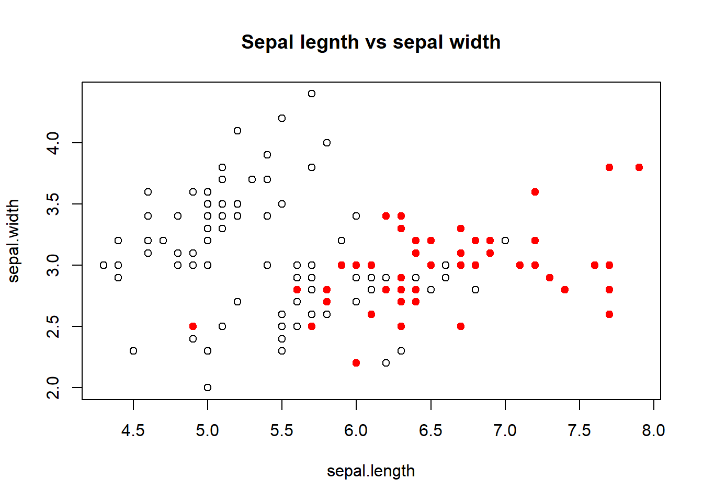
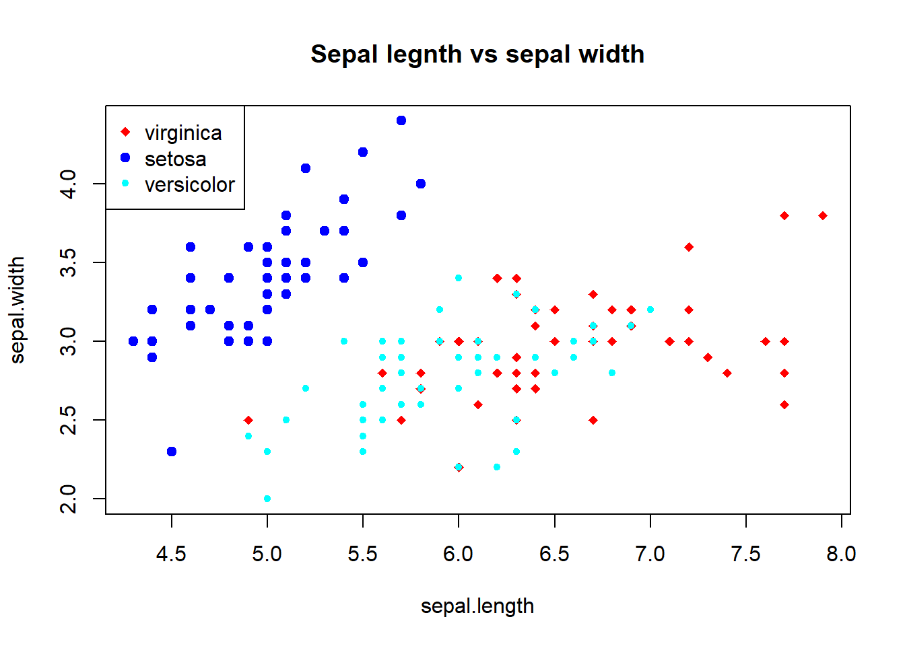
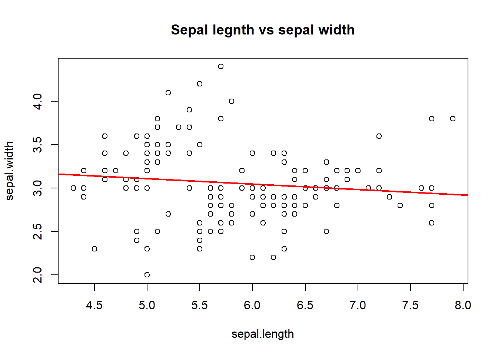
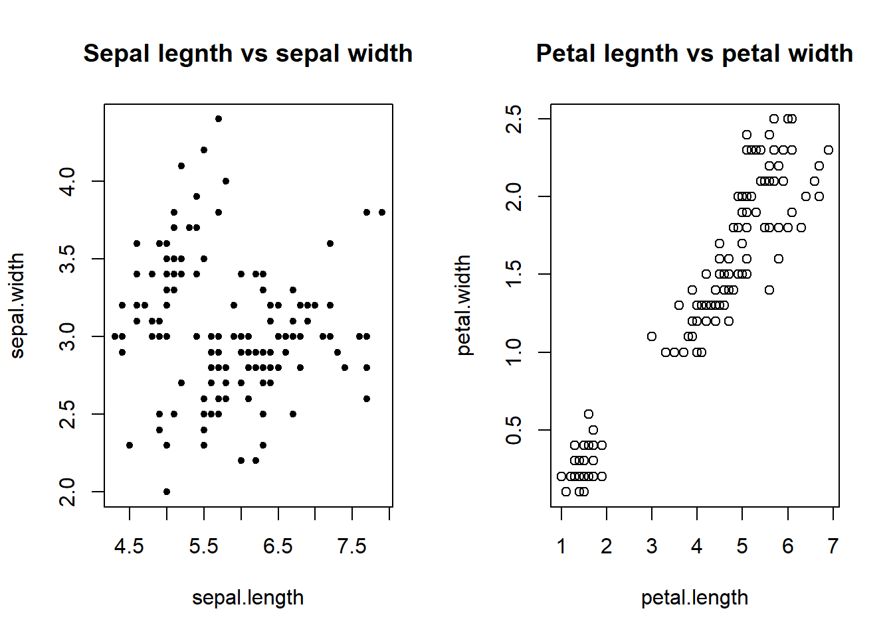
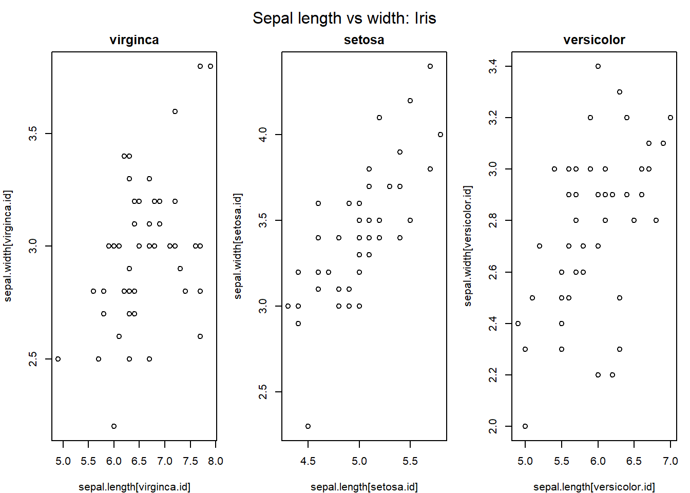
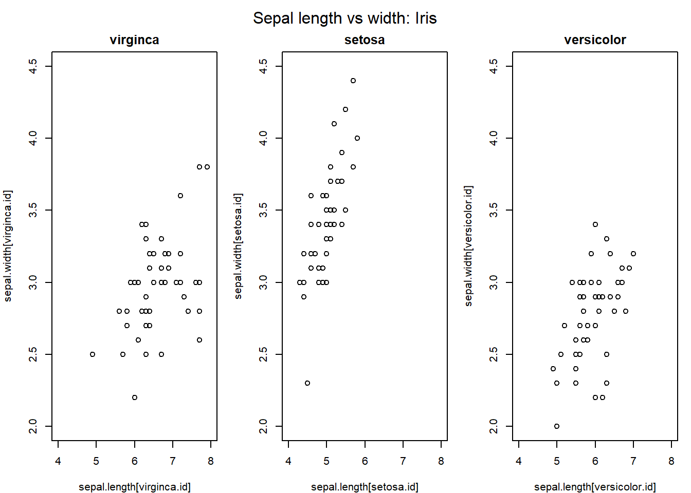
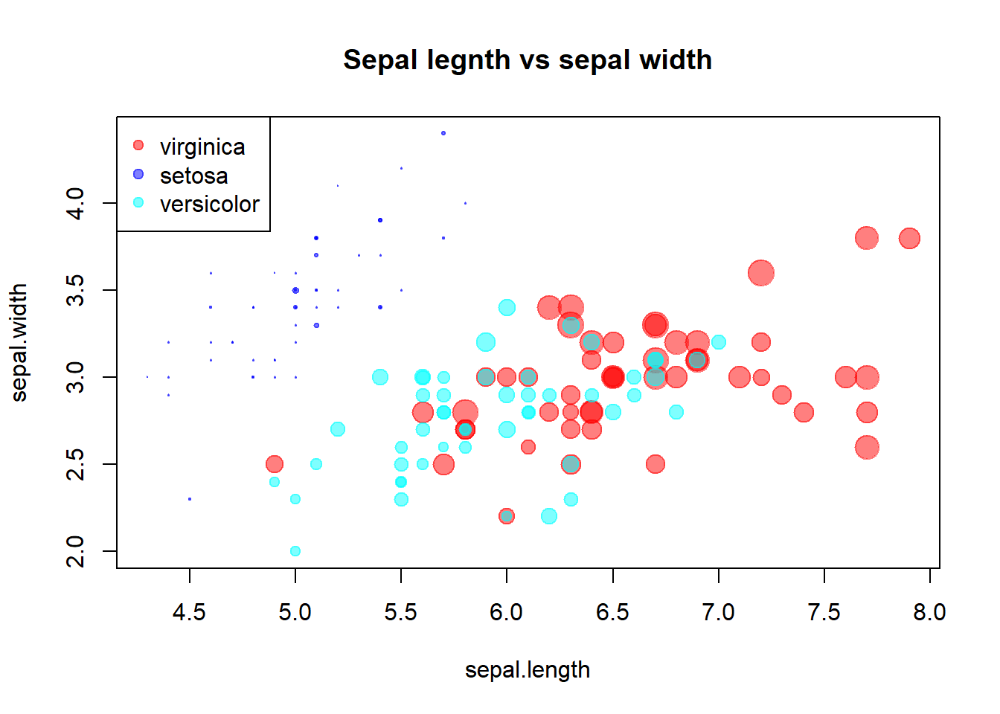
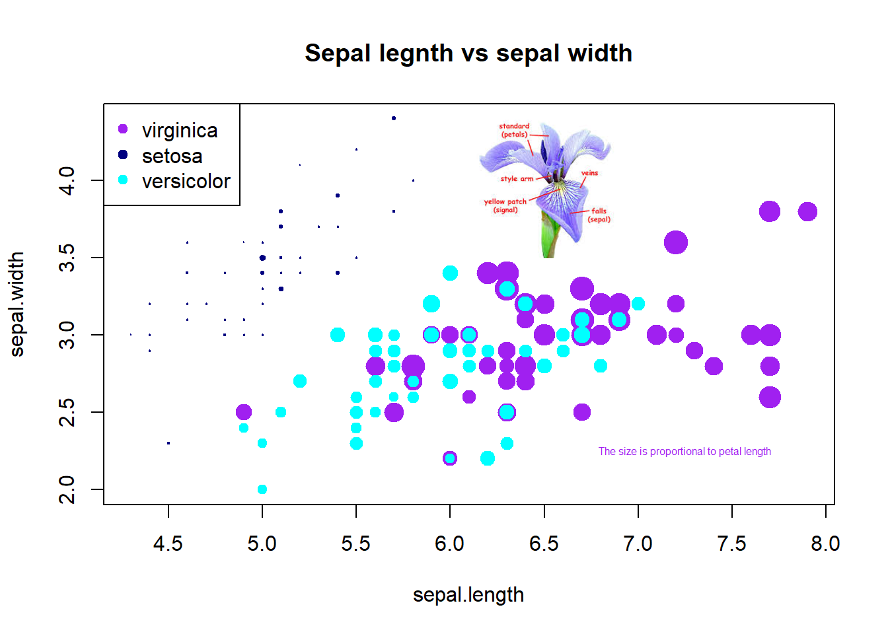

Topic 5 Getting Started with Base R Graphics
The two core plotting and graphics packages in the base R are:
graphics: contains plotting functions for the “base” graphing systems, including plot, hist, boxplot, and many others.
grDevices: contains all the code implementing the various graphics devices, including X11, PDF, PostScript, PNG, etc.
The grDevices package contains the functionality for sending plots to various output devices. The graphics package contains the code for actually constructing and annotating plots.
In this note, we focus on using the base plotting system to create graphics on the screen device.
5.1 Base Graphics
Base graphics are used most commonly and are a very powerful system for creating data graphics. There are two phases to creating a base plot:
Initializing a new plot.
Annotating (adding to) an existing plot.
For example, calling the base plot functions plot(x, y) or hist(x) will launch a graphics device (if one is not already open) and draw a new plot on the device. The based plot function has many arguments, letting us set the title, x-axis label, y-axis label, etc.
The base graphics system has many global parameters that can be set and tweaked. These parameters are documented in ?par and are used to control the global behavior of plots, such as the margins, axis orientation, and other details.
5.2 Simple Base Graphics
This section explains how to use the base plotting functions to make basic statistical graphics.
5.2.1 Histogram
Here is an example of a simple histogram made using the hist() function in the graphics package. If we run this code and our graphics window is not already open, it should open once you call the hist() function.
## Draw a new plot on the screen device
hist(iris$Sepal.Length,
xlab = "Sepal Length",
ylab = "Counts",
main = "Frequency distribution of sepal length") Figure 5.1: Figure 1. Sepal width of iris
5.2.2 Boxplot
Boxplots can be made in R using the boxplot() function, which takes as its first argument a formula. The formula has a form of y-axis ~ x-axis. Anytime you see a ~ in R, it’s a formula. Here, we are plotting the sepal length of iris flowers and the right-hand side of ~ the Species.
Figure 5.2: Box plot of sepal length by species
Each boxplot shows the median, 25th, and 75th percentiles of the data (the “box”), as well as +/- 1.5 times the interquartile range (IQR) of the data (the “whiskers”). Any data points beyond 1.5 times the IQR of the data are indicated separately with circles.
We can see that Virginica has an outlier.
5.2.3 Scatterplot
Here is a simple scatter plot made with the plot() function.
Figure 5.3: Scatter plot of sepal length and sepal width
Generally, the plot() function takes two vectors of numbers: one for the x-axis coordinates and one for the y-axis coordinates. However, plot() is a generic function in R, which means its behavior can change depending on what kinds of data are passed to the function.
One thing to note here is that we have provided labels for the x- and the y-axis and title as well. If they were not specified, the plot function will provide this information automatically using the names of the variables.
5.3 Some Important Base Graphics Parameters
Many base plotting functions share a set of global parameters. Here are a few key ones.
pch: the plotting symbol (default is an open circle).lty: the line type (default is a solid line), can be dashed, dotted, etc.lwd: the line width, specified as an integer multiple.col: the plotting color, specified as a number, string, or hex code; the colors() function gives you a vector of colors by name.xlab: character string for the x-axis label.ylab: character string for the y-axis label.
The par() function is used to specify the global graphics parameters that affect all plots in an R session. These parameters can be overridden when they are specified as arguments to specific plotting functions.
las: the orientation of the axis labels on the plot.bg: the background color.mar: the margin size.oma: the outer margin size (default is 0 for all sides).mfrow: number of plots per row, column (plots are filled row-wise).mfcol: number of plots per row, column (plots are filled column-wise).
We can see the default values for global graphics parameters by calling the par() function and passing the name of the parameter in quotes.
## [1] "solid"## [1] "black"## [1] 1Here are some more default values for global graphics parameters.
## [1] "white"## [1] 5.1 4.1 4.1 2.1## [1] 1 1For the most part, we usually don’t have to modify these when making quick plots. However, we might need to tweak them to finalize the plots.
5.4 Base Plotting Functions
The most basic base plotting function is plot(). The plot() function makes a scatter-plot, or other types of plot depending on the class of the object being plotted. Calling plot() will draw a plot on the screen device (and open the screen device if not already open). After that, annotation functions can be called to add to the already-made plot.
Some key annotation functions are
lines(): add lines to a plot, given a vector of x values and a corresponding vector of y values (or a 2-column matrix); this function just connects the dotspoints(): add points to a plottext(): add text labels to a plot using specified x, y coordinatestitle(): add annotations to x, y-axis labels, title, subtitle, outer marginmtext(): add arbitrary text to the margins (inner or outer) of the plotaxis(): adding axis ticks/labels
Here’s an example of creating a base plot and adding some annotation. First, we make the plot with the plot() function and then add a title to the top of the plot with the title() function.
## Make the initial plot
plot(iris$Sepal.Length, iris$Sepal.Width)
## Add a title
title(main = "Sepal length and width of iris") Figure 5.4: Base plot with annotation: Iris
Here, I start with the same plot as above (although I add the title right away using the main argument to plot()) and then annotate it by coloring the data points corresponding.
sepal.length = iris$Sepal.Length
sepal.width = iris$Sepal.Width
species = iris$Species
## identifying the ID of Virginica
virginca.id = which(species=="virginica") # value are case sensitive!
## making scatter plot
plot(sepal.length, sepal.width, main = "Sepal legnth vs sepal width")
##
points(sepal.length[virginca.id], sepal.width[virginca.id], pch = 19, col = "red")
The following plot colors the data points with different colors based on species. legend() function explains the meaning of the different colors in the plot.
sepal.length = iris$Sepal.Length
sepal.width = iris$Sepal.Width
species = iris$Species
## identifying the ID of Virginica
virginca.id = which(species=="virginica") # value are case sensitive!
setosa.id = which(species=="setosa")
versicolor.id = which(species=="versicolor")
## making an empty plot: type = "n" ==> no point
plot(sepal.length, sepal.width, main = "Sepal legnth vs sepal width", type = "n")
##
points(sepal.length[virginca.id], sepal.width[virginca.id], pch = 18, col = "red")
points(sepal.length[setosa.id], sepal.width[setosa.id], pch = 19, col = "blue")
points(sepal.length[versicolor.id], sepal.width[versicolor.id], pch = 20, col = "cyan")
legend("topleft", c("virginica", "setosa", "versicolor"),
col=c("red", "blue", "cyan"),
pch=c(18, 19, 20))
5.5 Base Plot with Regression Line
It’s fairly common to make a scatterplot and then want to draw a simple linear regression line through the data. This can be done with the abline() function.
Below, we first make the plot (as above). Then we fit a simple linear regression model using the lm() function. Here, we try to model Ozone as a function of Wind. Then we take the output of lm() and pass it to the abline() function which automatically takes the information from the model object and calculates the corresponding regression line.
Note that in the call to plot() below, we set pch = 20 to change the plotting symbol to a filled circle.
sepal.length = iris$Sepal.Length
sepal.width = iris$Sepal.Width
## making a plot
plot(sepal.length, sepal.width, main = "Sepal legnth vs sepal width", pch = 21)
##
model <- lm( sepal.width ~ sepal.length)
## Draw regression line on plot
abline(model, lwd = 2, col = "red")
5.6 Multiple Base Plots
Making multiple plots side by side is a useful way to visualize many relationships between variables with static 2-D plots. Often the repetition of data across a single plot window can be a useful way to identify patterns in the data. In order to do this, the mfrow and mfcol parameters set by the par() function are critical.
Both the mfrow and mfcol parameters take two numbers: the number of rows of plots followed by the number of columns. The multiple plots will be arranged in a matrix-like pattern. The only difference between the two parameters is that if mfrow is set, then the plots will be drawn row-wise; if mfcol is set, the plots will be drawn column-wise.
In the example below, we make two plots: sepal length vs sepal width and petal length vs petal width. We set par(mfrow = c(1, 2)), which indicates that we have one row of plots and two columns of plots.
par(mfrow = c(1, 2))
sepal.length = iris$Sepal.Length
sepal.width = iris$Sepal.Width
petal.length = iris$Petal.Length
petal.width = iris$Petal.Width
## making a plot
plot(sepal.length, sepal.width, main = "Sepal legnth vs sepal width", pch = 20)
plot(petal.length, petal.width, main = "Petal legnth vs petal width", pch = 21)
The example below creates three plots in a row by setting par(mfrow = c(1, 3)). Here we also change the plot margins with the mar parameter. The various margin parameters, like mar, are specified by setting a value for each side of the plot. Side 1 is the bottom of the plot, side 2 is the left-hand side, side 3 is the top, and side 4 is the right-hand side.
In the example below we also modify the outer margin via the oma parameter to create a little more space for the plots and to place them closer together.
# layout of the plot
par(mfrow = c(1, 3),
mar = c(4, 4, 2, 1),
oma = c(0, 0, 2, 0))
# extract variables from the data frame
sepal.length = iris$Sepal.Length
sepal.width = iris$Sepal.Width
species = iris$Species
## identifying the ID of Virginica
virginca.id = which(species=="virginica") # value are case sensitive!
setosa.id = which(species=="setosa")
versicolor.id = which(species=="versicolor")
## making three plots
plot(sepal.length[virginca.id], sepal.width[virginca.id], main = "virginca")
plot(sepal.length[setosa.id], sepal.width[setosa.id], main = "setosa")
plot(sepal.length[versicolor.id], sepal.width[versicolor.id], main = "versicolor")
##
mtext("Sepal length vs width: Iris", outer = TRUE)
In the above example, the mtext() function was used to create an overall title for the panel of plots. Hence, each individual plot has a title, while the overall set of plots also has a summary title. The mtext() function is important for adding text annotations that aren’t specific to a single plot.
Notice that the scales of the vertical axes of the three plots are not the same. To misleading visual comparison, we should make the scales of both axes the same.
# layout of the plot
par(mfrow = c(1, 3),
mar = c(4, 4, 2, 1),
oma = c(0, 0, 2, 0))
# extract variables from the data frame
sepal.length = iris$Sepal.Length
sepal.width = iris$Sepal.Width
species = iris$Species
## identifying the ID of Virginica
virginca.id = which(species=="virginica") # value are case sensitive!
setosa.id = which(species=="setosa")
versicolor.id = which(species=="versicolor")
## making three plots
plot(sepal.length[virginca.id], sepal.width[virginca.id], xlim=c(4,8), ylim=c(2, 4.5), main = "virginca")
plot(sepal.length[setosa.id], sepal.width[setosa.id], xlim=c(4,8), ylim=c(2, 4.5),main = "setosa")
plot(sepal.length[versicolor.id], sepal.width[versicolor.id], xlim=c(4,8), ylim=c(2, 4.5),main = "versicolor")
##
mtext("Sepal length vs width: Iris", outer = TRUE)
We now can visualize the mean sepal width and sepal length among the species.
5.7 Controlling Point Size and Transparency
we use cex= and alpha= to control the point size according to the value of a variable and the level of transparency of the point.
sepal.length = iris$Sepal.Length
sepal.width = iris$Sepal.Width
size.petal = iris$Petal.Width
species = iris$Species
## identifying the ID of Virginica
virginca.id = which(species=="virginica") # value are case sensitive!
setosa.id = which(species=="setosa")
versicolor.id = which(species=="versicolor")
## color code
col.code = c(alpha("red",0.5),alpha("blue",0.5),alpha("cyan",0.5))
## making an empty plot: type = "n" ==> no point
plot(sepal.length, sepal.width, main = "Sepal legnth vs sepal width", type = "n")
## change the point size based on their average of sepal length and width
points(sepal.length[virginca.id], sepal.width[virginca.id],
pch = 19, col = col.code[1], cex = size.petal[virginca.id])
points(sepal.length[setosa.id], sepal.width[setosa.id],
pch = 19, col = col.code[2], cex = size.petal[setosa.id])
points(sepal.length[versicolor.id], sepal.width[versicolor.id],
pch = 19, col = col.code[3], cex = size.petal[versicolor.id])
legend("topleft", c("virginica", "setosa", "versicolor"),
col=col.code,
pch=c(19, 19, 19))
5.8 Annotations
We add annotations to the base R plot. The annotations could be plain texts, images, and mathematical expressions.
library(scales)
my_iris <- readPNG('img02/irisPNG.png')
raster.iris <- as.raster(my_iris)
# Use the code in the precious section
sepal.length = iris$Sepal.Length
sepal.width = iris$Sepal.Width
size.petal = iris$Petal.Width
species = iris$Species
## identifying the ID of Virginica
virginca.id = which(species=="virginica") # value are case sensitive!
setosa.id = which(species=="setosa")
versicolor.id = which(species=="versicolor")
## color code
# col.code = c(alpha("red",0.5),alpha("blue",0.5),alpha("cyan",0.5))
## making an empty plot: type = "n" ==> no point
plot(sepal.length, sepal.width, main = "Sepal legnth vs sepal width", type = "n")
## change the point size based on their average of sepal length and width
points(sepal.length[virginca.id], sepal.width[virginca.id],
pch = 19, col = "purple", cex = size.petal[virginca.id], alpha = 0.6)
points(sepal.length[setosa.id], sepal.width[setosa.id],
pch = 19, col = "navy", cex = size.petal[setosa.id], alpha = 0.6)
points(sepal.length[versicolor.id], sepal.width[versicolor.id],
pch = 19, col = "cyan", cex = size.petal[versicolor.id], alpha = 0.6)
legend("topleft", c("virginica", "setosa", "versicolor"),
col=c("purple", "navy", "cyan"),
pch=c(19, 19, 19))
## various annotations
#specify the position of the image through bottom-left and top-right coords
rasterImage(raster.iris,6,3.5,7,4.4)
text(7.25, 2.25, "The size is proportional to petal length", col = "purple", cex = 0.5)